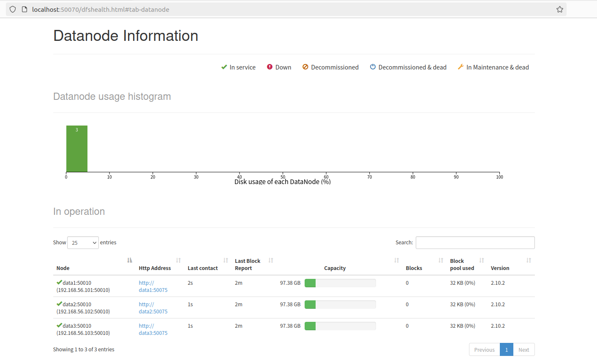
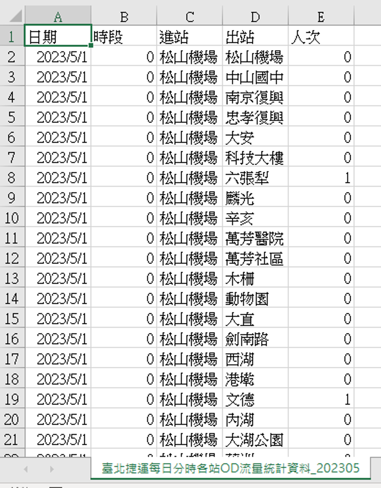
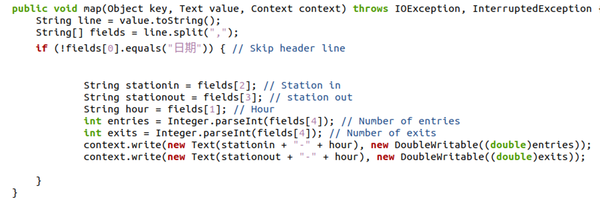
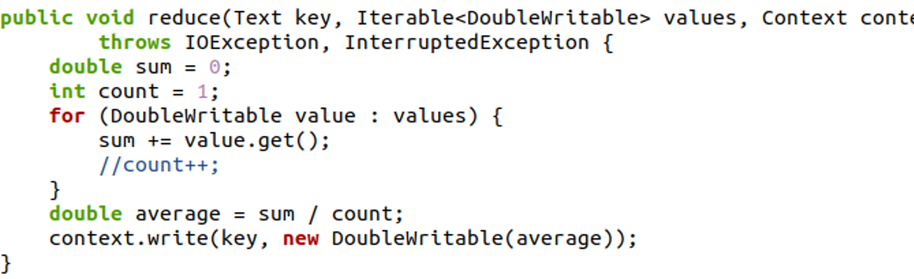
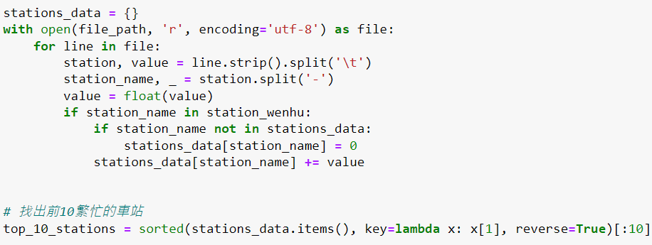
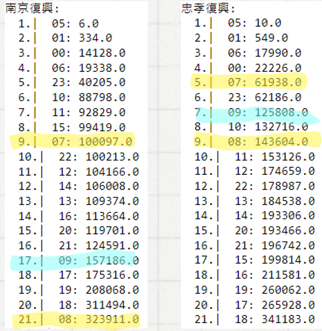

Hadoop 學習描述
在大學選修大數據分析這門課，學習Hadoop的環境架構跟建設並使用hadoop(用java撰寫mapreduce)和spark來做大數據的資料處理完成報告。
hadoop 期末專案

配置一個 master node 跟三個 data nodes

使用政府公開捷運資料集分析

MAP 階段:讀取每行輸入數據。將 station-hour 作為鍵，進出站人數作為值，輸出為鍵值對。

REDUCE 階段:接收Mapper鍵值對。累加出每個時段的總人數輸出 station-hour 作為鍵，總和作為值。

運用python資料分析 (部分程式碼)

資料視覺化

統計車站高峰時間的數據